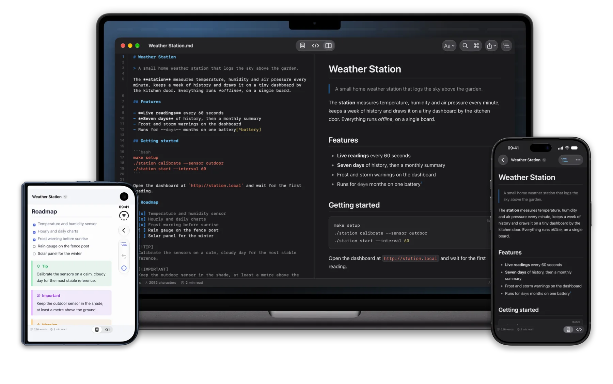
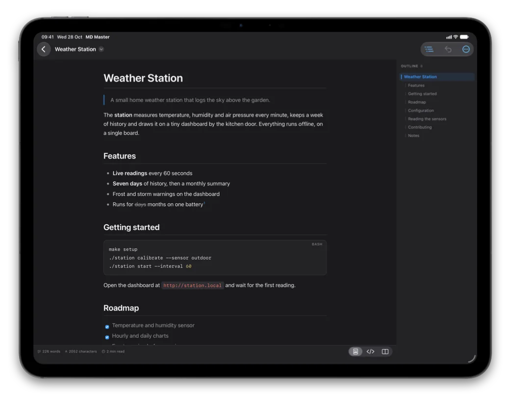
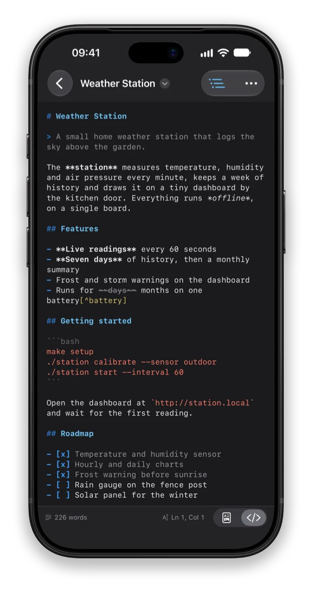
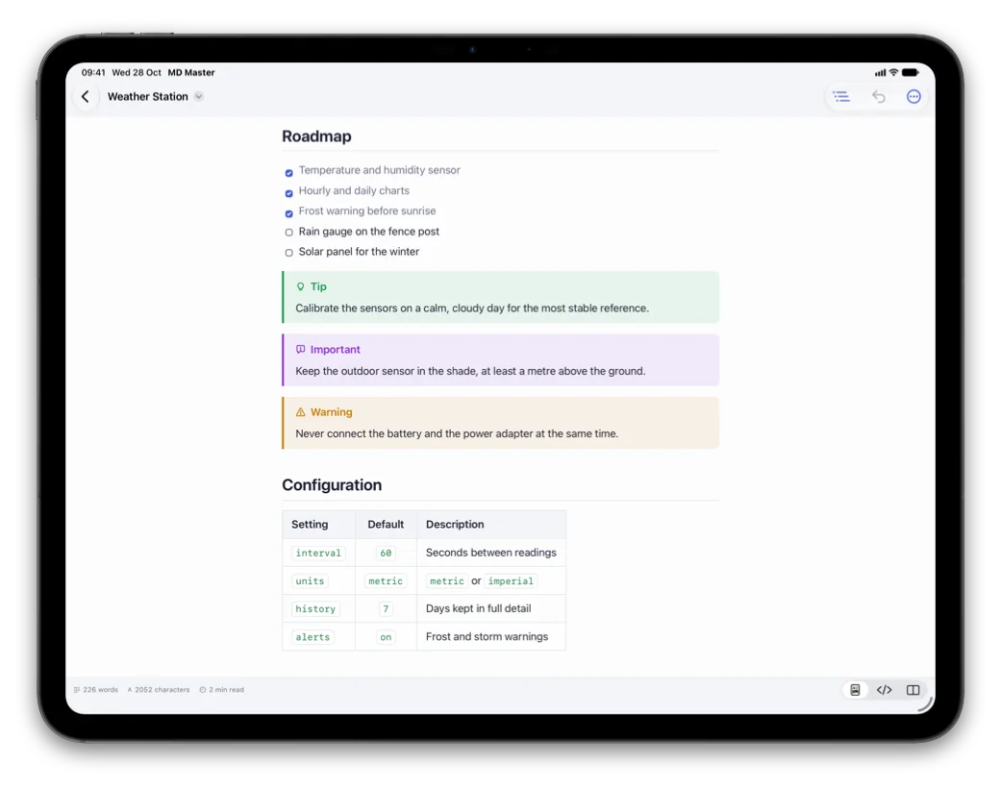
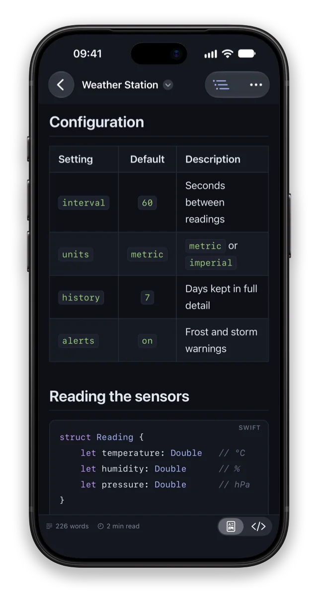
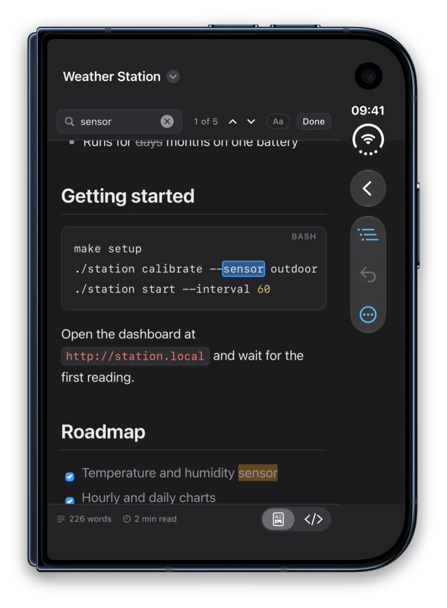
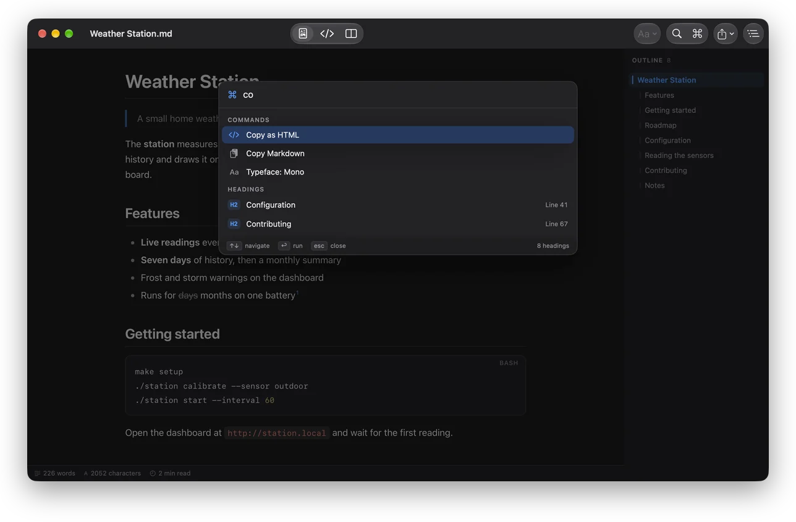

Markdown reader and editor
Markdown, beautifully rendered
Open any .md file and read it the way it was meant to look. Switch to the source to fix a typo, or put source and preview side by side and write. When the text has to leave the device, export a clean PDF.
For iOS 18, iPadOS 18 and macOS 15 or later

Read
Every .md file, neatly formatted
Headings, tables, task lists, code and callouts look the way the author meant them to. An outline of the document follows along as you scroll.
- Tables with alignment, footnotes, strikethrough, front matter and inline HTML
- Tap a heading in the outline to jump there; links to other sections just work
- Word count, reading time, and the typeface, size and line width you like

Write
The source, highlighted
Switch to the source to fix a typo, or put source and preview side by side on iPad and Mac — the preview scrolls along as you write.
- Lists continue themselves: Return starts the next item, Tab nests it
- A formatting bar above the keyboard on iPhone and iPad
- Shortcuts for bold, italic, links, headings and lists, starting with ⌘B

Tasks, tables, callouts
Tick a task, the file updates itself
Check a box in the preview and the app writes the [x] into the file for you, as one
step you can undo.
- Five kinds of callout: note, tip, important, warning and caution
- Tables with aligned columns, right in the preview
- Daylight theme for bright rooms, projectors and paper

Code
Code that reads like code
Code blocks are highlighted for more than twenty programming languages, and each has its own Copy button.
- Swift, Python, JavaScript, Go, Rust, SQL, shell, YAML, JSON and more
- Export a PDF whose page breaks never cut a line of text or a table row
- Or a single self-contained HTML file, ready to send

Find
Find it in a moment
Every match is highlighted, in the preview or in the source. Step through them one by one, and replace in the source.
- Match case when it matters
- Replace All is a single step to undo

Made for Mac
Every command a few letters away
Press ⌘K and type: the command palette runs any command by name and jumps to any heading of the document.
- Typed in the wrong keyboard layout? It still finds it
- Menus and keyboard shortcuts for everything, line numbers in the source
- Make it the default app for .md files with one click

And more
At home on your devices
PDF, HTML and print
A4 or US Letter with page numbers and working links, a self-contained HTML file, printing, Copy as HTML and Copy Markdown. Paper is white unless you choose otherwise.
Quick Look
Markdown files preview in Finder and Files with the same rendering — press Space in Finder and read without opening anything.
Four themes
Graphite, Midnight, Amber CRT and Daylight, for the interface, the source and the preview alike. Switch at any time; it applies instantly.
A built-in Markdown guide
Every construct, from headings to footnotes, with its markup and how it looks. Handy when you are new to Markdown, or just forgot the table syntax.
Private by design
No account, no ads, no tracking. Your documents stay in your own folders, and scripts inside a document never run.
Seven languages
English, German, French, Ukrainian, Spanish, Japanese and Portuguese, switched without a restart. Files in UTF-8, UTF-16 and older encodings open correctly.
Open a README. Write the next one.
One app for iPhone, iPad and Mac.